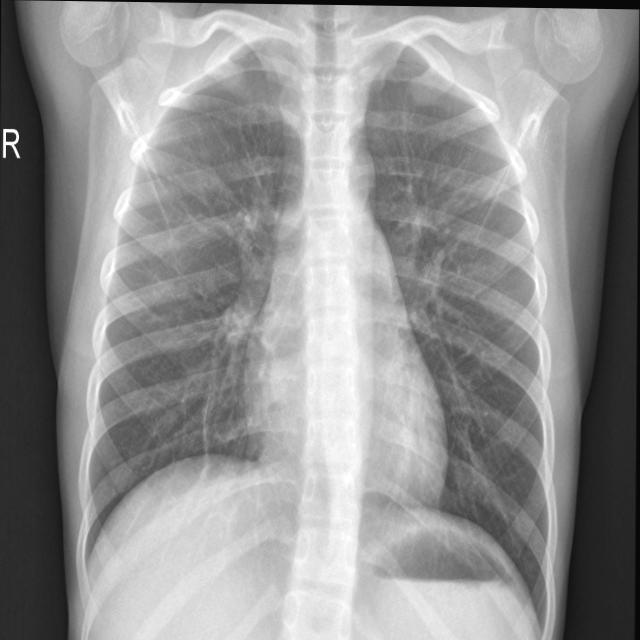
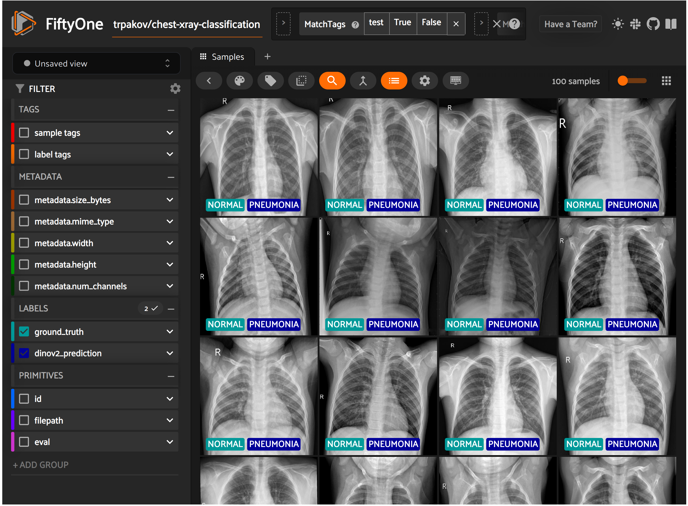

FiftyOne Finetune DinoV2 for ChestXray Dataset
Introduction
In this tutorial, we will:
- Examine the ChestXray dataset using FiftyOne,
- Finetune a Dinov2 model from HuggingFace Transformers on the ChestXray dataset, which has 2 classes,
- Evaluate the finetuned model on the validation subset,
- Compare predictions and ground truths using FiftyOne.
Let’s start by installing the required libraries.
Setup
Firstly, install HuggingFace datasets, transformers and FiftyOne.
# !pip install datasets transformers --upgrade
# !pip install fiftyone
Dataset
Now, let’s download the dataset.
import os
import tqdm
import fiftyone as fo
from datasets import load_dataset
dataset_root = "./datasets"
dataset_splits = ["train", "validation", "test"]
dataset_name = "trpakov/chest-xray-classification"
dataset = load_dataset(dataset_name, name="full")
class_names = dataset["train"].features["labels"].names
labels = class_names
id2label = {id: str(label) for id, label in enumerate(labels)}
label2id = {str(label): id for id, label in enumerate(labels)}
print(f"id2label: {id2label}")
for dataset_split in dataset_splits:
dataset_save_folder = os.path.join(dataset_root, dataset_split)
if not os.path.exists(dataset_save_folder):
os.makedirs(dataset_save_folder)
for image_idx, image_cl_dict in tqdm.tqdm(enumerate(dataset[dataset_split]),
total=len(dataset[dataset_split]),
desc=f"Saving {dataset_split} images"):
image = image_cl_dict["image"]
cls = id2label[int(image_cl_dict["labels"])]
cls_folder = os.path.join(dataset_save_folder, cls)
if not os.path.exists(cls_folder):
os.makedirs(cls_folder)
image.save(f"{cls_folder}/image_{image_idx}.jpg")
print(dataset)
id2label: {0: 'PNEUMONIA', 1: 'NORMAL'}
DatasetDict({
train: Dataset({
features: ['image_file_path', 'image', 'labels'],
num_rows: 12230
})
validation: Dataset({
features: ['image_file_path', 'image', 'labels'],
num_rows: 1165
})
test: Dataset({
features: ['image_file_path', 'image', 'labels'],
num_rows: 582
})
})
Now, visualize the first sample of ChestXray dataset.
example = dataset["train"][0]
print(f"label: {example['labels']}")
example["image"]
label: 1

FiftyOne is an open-source toolkit for visualizing and curating datasets. In this stage, we will visualize all samples from the ChestXray dataset on the FiftyOne web UI.
try:
fo.delete_dataset(dataset_name)
except:
pass
fiftyone_dataset = fo.Dataset(dataset_name)
dataset_type = fo.types.ImageClassificationDirectoryTree
for dataset_split in dataset_splits:
dataset_dir = os.path.join(dataset_root, dataset_split)
fiftyone_dataset.add_dir(
dataset_dir=dataset_dir,
dataset_type=dataset_type,
tags=dataset_split,
)
100% |█████████████| 12230/12230 [3.8s elapsed, 0s remaining, 3.4K samples/s]
100% |███████████████| 1165/1165 [335.1ms elapsed, 0s remaining, 3.5K samples/s]
100% |█████████████████| 582/582 [179.4ms elapsed, 0s remaining, 3.2K samples/s]
session = fo.launch_app(fiftyone_dataset)
Now, we will define and load the preprocessor and the model. Here, we will utilize the Dinov2-base model from Meta.
import torch
from transformers import AutoImageProcessor, AutoModelForImageClassification
from datasets import load_dataset
model_name = "facebook/dinov2-base"
processor = AutoImageProcessor.from_pretrained(model_name)
print(processor)
BitImageProcessor {
"crop_size": {
"height": 224,
"width": 224
},
"do_center_crop": true,
"do_convert_rgb": true,
"do_normalize": true,
"do_rescale": true,
"do_resize": true,
"image_mean": [
0.485,
0.456,
0.406
],
"image_processor_type": "BitImageProcessor",
"image_std": [
0.229,
0.224,
0.225
],
"resample": 3,
"rescale_factor": 0.00392156862745098,
"size": {
"shortest_edge": 256
}
}
model = AutoModelForImageClassification.from_pretrained(
model_name,
num_labels=len(labels),
id2label=id2label,
label2id=label2id
)
To obtain a robust model, we will apply some augmentations to the training dataset.
from torchvision.transforms import Compose, RandomResizedCrop, RandomHorizontalFlip, ColorJitter, ToTensor, Normalize
import torch
# Extarct image mean, std and interpolation from the inference processor
mean = processor.image_mean
std = processor.image_std
interpolation = processor.resample
train_transform = Compose([
RandomResizedCrop(size=(224, 224), scale=(0.08, 1.0), ratio=(0.75, 1.3333), interpolation=interpolation),
RandomHorizontalFlip(p=0.5),
ColorJitter(brightness=(0.6, 1.4), contrast=(0.6, 1.4), saturation=(0.6, 1.4)),
ToTensor(),
Normalize(mean=mean, std=std),
])
def prepare_data(batch, mode="train"):
images = batch["image"]
if mode == "train":
images = [train_transform(image.convert("RGB")) for image in images]
pixel_values = torch.stack(images)
elif mode == "test":
pixel_values = processor(images, return_tensors="pt").pixel_values
else:
raise ValueError(f"Mode {mode} not supported")
inputs = {}
inputs["pixel_values"] = pixel_values
inputs["labels"] = torch.tensor(batch["labels"])
return inputs
# set num_proc equal to the number of CPU cores on your machine
train_dataset = dataset["train"].map(prepare_data, num_proc=1, batched=True, batch_size=20, fn_kwargs={"mode":"train"})
eval_dataset = dataset["test"].map(prepare_data, num_proc=1, batched=True, batch_size=20, fn_kwargs={"mode":"test"})
Make the dataset suitable for Pytorch.
train_dataset.set_format("torch")
eval_dataset.set_format("torch")
Here, collate_fn is used for batching examples.
import torch
def collate_fn(examples):
pixel_values = torch.stack([example["pixel_values"] for example in examples])
labels = torch.tensor([example["labels"] for example in examples])
return {"pixel_values": pixel_values, "labels": labels}
Training the Model
In this stage, we will define training arguments and evaluation metrics.
from transformers import TrainingArguments
training_args = TrainingArguments(
output_dir=f"{model_name}",
per_device_train_batch_size=32,
evaluation_strategy="steps",
num_train_epochs=4,
fp16=True,
save_steps=100,
eval_steps=100,
logging_steps=100,
learning_rate=5e-5,
save_total_limit=2,
remove_unused_columns=False,
push_to_hub=False,
report_to='tensorboard',
load_best_model_at_end=True,
metric_for_best_model="accuracy",
)
from sklearn.metrics import accuracy_score
import numpy as np
def compute_metrics(eval_pred):
"""Computes accuracy on a batch of predictions"""
predictions = np.argmax(eval_pred.predictions, axis=1)
accuracy = accuracy_score(y_pred=predictions, y_true=eval_pred.label_ids)
return {"accuracy": accuracy}
from transformers import Trainer
trainer = Trainer(
model,
training_args,
train_dataset=train_dataset,
eval_dataset=eval_dataset,
tokenizer=processor,
compute_metrics=compute_metrics,
data_collator=collate_fn
)
Now, we are ready to start finetuning our model.
train_results = trainer.train()
trainer.save_model()
trainer.log_metrics("train", train_results.metrics)
trainer.save_metrics("train", train_results.metrics)
trainer.save_state()
***** train metrics *****
epoch = 4.0
total_flos = 3562792493GF
train_loss = 0.2489
train_runtime = 0:22:04.82
train_samples_per_second = 36.926
train_steps_per_second = 1.156
Evaluate the Finetuned Model
After training, evaluate the finetuned model.
metrics = trainer.evaluate()
trainer.log_metrics("eval", metrics)
trainer.save_metrics("eval", metrics)
***** eval metrics *****
epoch = 4.0
eval_accuracy = 0.8282
eval_loss = 0.4037
eval_runtime = 0:00:09.98
eval_samples_per_second = 58.267
eval_steps_per_second = 7.308
from transformers import AutoModelForImageClassification, AutoImageProcessor
finetuned_model_folder = "./facebook/dinov2-base"
image_processor = AutoImageProcessor.from_pretrained(finetuned_model_folder)
model = AutoModelForImageClassification.from_pretrained(finetuned_model_folder)
from PIL import Image
import torch
def infer(image):
# prepare image for the model
encoding = image_processor(image.convert("RGB"), return_tensors="pt")
# forward pass
with torch.no_grad():
outputs = model(**encoding)
logits = outputs.logits
predicted_class_idx = logits.argmax(-1).item()
predicted_class = id2label[predicted_class_idx]
return predicted_class
fiftyone_test_dataset = fiftyone_dataset.match_tags("test")
for sample in fiftyone_test_dataset.iter_samples(autosave=True, progress=True):
image_path = sample.filepath
image = Image.open(image_path)
predicted_class = infer(image)
sample["dinov2_prediction"] = fo.Classification(label=predicted_class)
100% |█████████████████| 582/582 [1.3m elapsed, 0s remaining, 7.3 samples/s]
session.view = fiftyone_test_dataset

results = fiftyone_test_dataset.evaluate_classifications(
"dinov2_prediction",
gt_field="ground_truth",
eval_key="eval",
method="binary",
classes=labels,
)
results.print_report()
precision recall f1-score support
PNEUMONIA 0.85 0.92 0.88 411
NORMAL 0.76 0.61 0.68 171
accuracy 0.83 582
macro avg 0.80 0.77 0.78 582
weighted avg 0.82 0.83 0.82 582
plot = results.plot_confusion_matrix()
plot.show()
plot = results.plot_pr_curve()
plot.show()
print(fiftyone_test_dataset.count_values("eval"))
{'TP': 105, 'TN': 377, 'FP': 34, 'FN': 66}
from fiftyone import ViewField as F
session.view = (
fiftyone_test_dataset
.match(F("dinov2_prediction.label") != F("ground_truth.label"))
)
session.freeze()
Resources
You can access the tutorial as a Jupyter Notebook on FiftyOne Finetune DinoV2 with HuggingFace Transformers for ChestXray Dataset.